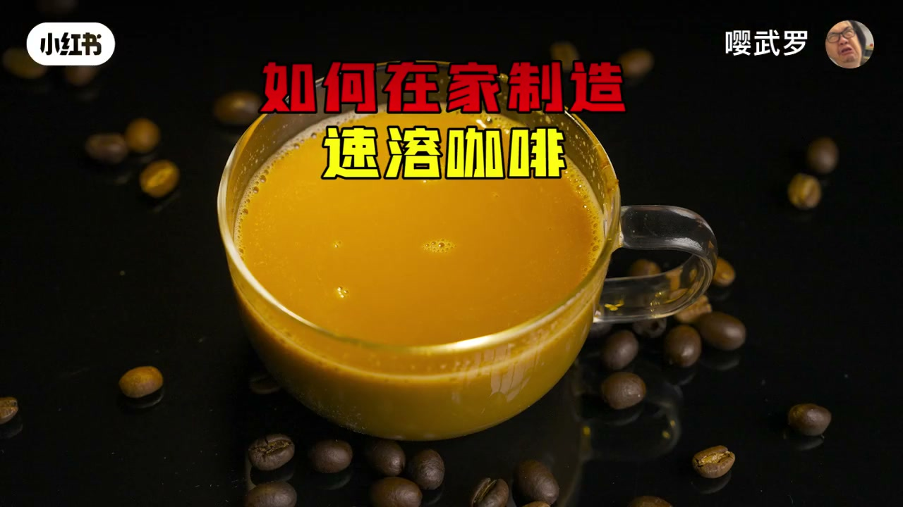
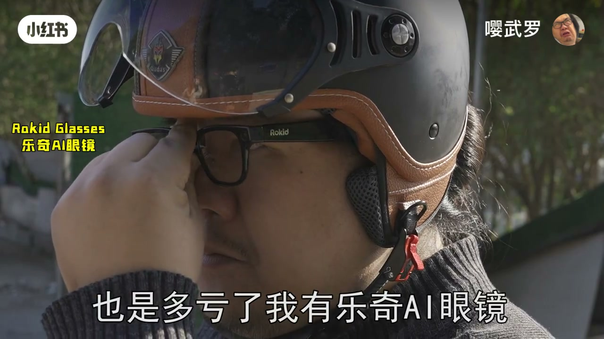
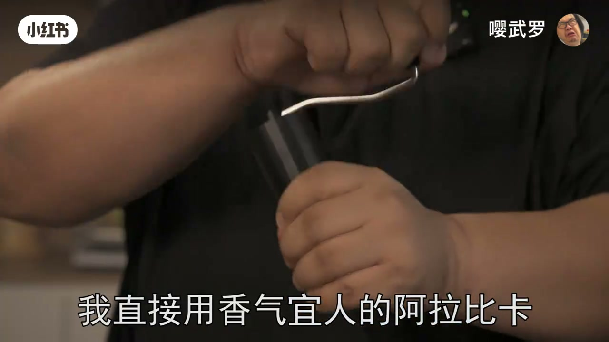
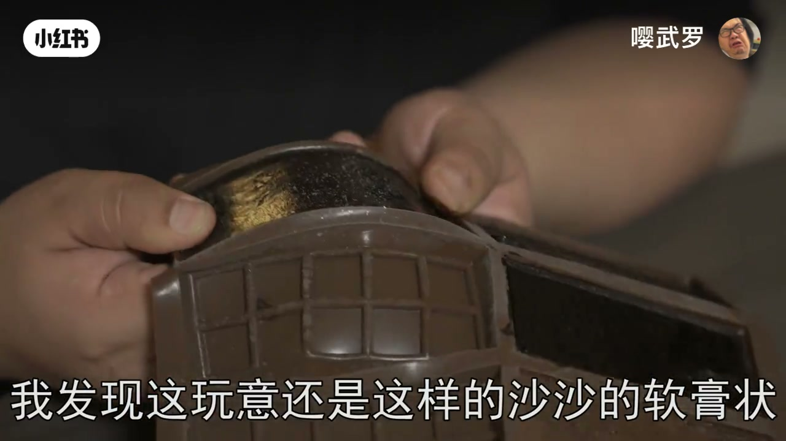
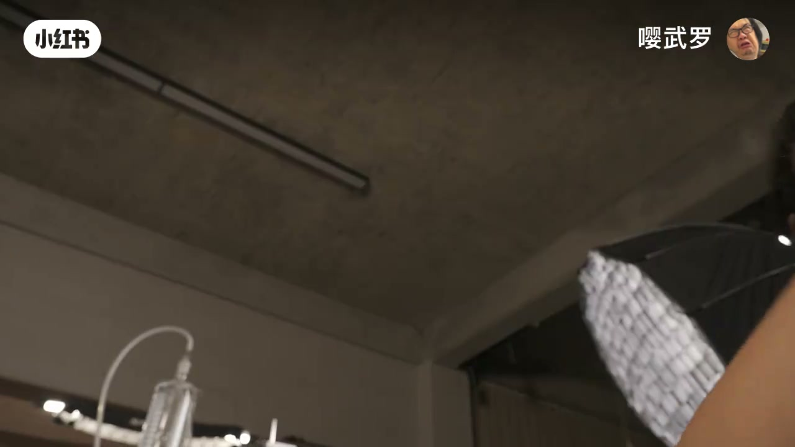
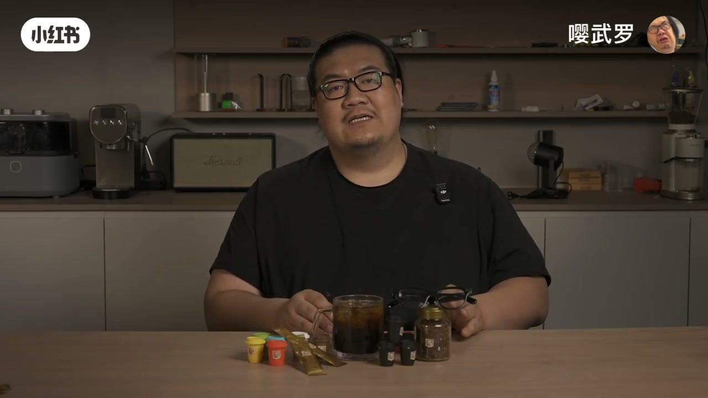

内容要点
凌晨加班想喝拿铁：选豆、磨粉、机萃、兑奶——麻烦但香；撕开速溶三十秒搞定，却少了醇厚与果香。作者用同一批好豆进喷雾干燥机，结果喝到「这辈子最难喝」的粉末，再用 GC-MS 钉死：约 210℃ 热风让酯类、醛类等风味物面目全非。请教业内后走出「三合一」商业路径：罗布斯塔深烘 + 奶粉糖掩盖高温负面，便宜好喝但「气没了」。直接冻干意式浓缩略好仍散失；按外文工艺做「水煮→真空浓缩→压过共晶点砸成大颗粒→再冻干」，外观像工业冻干，香气问题依旧。最后从豆液蒸出香气、冷凝收集后喷回冻干粉，做出「罗氏速溶」——比裸冻干高那么一丢丢。收束：拼配太复杂先不讲；口味远逊现磨，但焦头烂额时那杯方便无法替代。
知识结构
现磨拿铁全流程 vs 速溶一撕一倒；同豆能否做出一样好喝的速溶？
雾化+热风成粉，却无香难喝；210℃ 与 GC-MS 证实风味散失。
专家：加奶粉糖掩盖；换罗布斯塔深烘，像某四字品牌，气没了。
手冲/挂耳也「方便」，香气与便利是否注定不相交？
阿拉比卡意式浓缩升华干燥：有香又像没香，散失仍不小。
水煮→旋蒸浓缩→超低温冻硬→砸 5mm→冻干大颗粒；外观像，味道仍旧。
香气难题以现有家用科技难解；火锅酱料对比「十元香气」。
油浴蒸气+冷凝/氮气/干冰收集，喷回冻干粉→罗氏速溶略高一点。
拼配未讲；口味远逊现磨，但方便仍值得留一杯。
高温喷雾毁香 → 奶糖掩盖成三合一；冻干更保香但仍散失 → 工厂式浓缩+大颗粒也不够；保不住就增香回填。速溶输风味、赢方便。
三十秒速溶 vs 一整套拿铁
[00:00 → 00:45]开场把两种提神路径并置：凌晨加班想喝咖啡，现磨路径是选豆、磨粉、机萃、兑奶，才能得到香浓拿铁——麻烦到「喝之前就不困了」；速溶则是一撕一倒一冲，约三十秒。作者承认速溶少了醇厚、果香与油润，但追问：为什么同样方便的粉末，就注定比不过现磨？
先算账：一块约 69 元的豆子可做约 14 杯美式（约 4.9 元/杯），对照一袋约 0.8 元的速溶——豆子本身好得多。假设成立：若用同一批好豆做成速溶，味道是不是就能追平？于是搬来小型喷雾干燥机。

喷雾干燥：成熟技术，却喝到「亲妈都不认」
[00:45 → 01:40]工艺动作很清楚：把现做咖啡液在高压下雾化成微滴，再被热风干燥成细粉。作者说这是很成熟的技术，理论应接近现做——结果却是「这辈子最难喝」：几乎没有任何香味。
查文献后指向风味散失：喷雾干燥机热风可高达约 210℃，酯类、醛类等风味物质发生复杂变化。GC-MS（转录作 GC Master）对照显示，高温后图谱「连亲妈都认不出来」。同豆、不同干燥路径，足以把一杯咖啡变成另一种东西。
专家路线：三合一用奶糖「盖」住高温伤害
[01:40 → 02:40]作者戴上 Rokid / 乐奇 AI 眼镜导航去请教业内（曾总）。结论很直：纯粉路线很难好喝；可以加入奶粉和糖，大幅压低高温干燥带来的负面口感。豆种与烘焙也要改：把偏香的阿拉比卡换成口味更重的罗布斯塔，中烘换成深烘——直接喝会是浓重焦糊与苦后调；加奶粉加糖冲泡后，却出一种「很像拿铁、也像某四字品牌」的熟悉感。
铝箔条包装后，这就是常见的三合一：便宜、味道过得去；坏处是罗布斯塔本就香气偏少，干制后再「气没了」。商业解法不是保香，而是用甜奶结构掩盖工艺损失。

香气与方便：平行线？先排除「泡粉当手冲」
[02:40 → 03:20]外行会问：磨完直接泡不就得了？叠滤纸冲掉渣呢？作者用「手冲麻烦得要死」「折简易滤网装粉」把挂耳/办公室冲泡点出来——这些确实更接近现磨风味，但仍要现场萃取，不是「粉末即饮」的速溶定义。问题收束成：香气与方便，是不是注定不能相交的平行线？答案：不一定——既然高温干燥毁香，就换冷冻干燥。
第一次冻干：意式浓缩直接升华，香气仍暧昧
[03:20 → 04:10]作者用手磨处理香气宜人的阿拉比卡，萃意式浓缩后直接冷冻、冻干（水分固态升华）。理论上风味散失应小于热风喷雾。48 小时后得到松散冻干粉，外观不像传统大颗粒工业冻干；品饮感受是「有香又像没香、果香又像没多少」——头脑尖尖的暧昧。GC-MS 显示：比高温干燥好得多，但仍有不小散失。怀疑工艺不对，于是去查外文资料（再次用上眼镜实时翻译）。

工厂步骤家用复刻：浓缩、共晶点、大颗粒冻干
[04:10 → 05:50]外文工艺总结为：水煮咖啡 → 浓缩 → 冷冻 → 打碎成大颗粒 → 再冻干。家用执行：粉加水后间接加热、封闭锅口（减少香气逃逸），沸腾约 10 分钟过滤；液约 6°Brix，需真空低温浓缩到约 55°Brix 以上。没有工厂真空浓缩，改用旋转蒸发仪，漫长一夜把稀液收成黏糊「石油状」。
普通冰箱冻不硬：浓缩物在共晶点附近呈沙沙软膏。解决办法是压过共晶点——扔进约 −60℃，数小时后成硬板砖，套袋砸成约 5mm 碎块立刻送冻干。再 48 小时，得到外观接近传统大颗粒的冻干咖啡：融化丝滑如陨石，但喝起来、闻起来仍像「之前那盘冻干」——形貌对了，香气难题没被外形解决。

水中捞月：成本账单与「十元酱料」的香
[05:50 → 06:40]算账时作者崩溃：同样一百多元预算能吃多少猪脚饭。暂时结论很丧：速溶损失香气，以人类目前科技（至少在家用实验边界内）无法完美解决。出门放松、火锅沾酱——对比「收马支付十元」也能有强烈香气——铺垫下一问：保不住香，能不能增香？
蒸香回填：从豆里抽出香，再喷回速溶
[06:40 → 08:00]外加香味剂像作弊；但从咖啡液本身蒸出香气再加回速溶，作者认为不算。流程：油浴加热咖啡液，香气随水蒸气挥发，经长冷凝管收集；为提高收集率加氮气与减压（气压从约 7 MPa 降到 1 MPa 以下——操作翻车「居然爆了」），氮气经气体加热罐到约 40℃，再换更大冷凝管与冰水稳定系统。最终在旁路小管倒入干冰，融化后倒出浓缩香气物，用喷笔边喷边搅拌到冻干粉上，小袋包装——「现代蒸香工艺」的冻干速溶完成。
GC-MS 显示：比未蒸香的冻干速溶「明显高了那么一丢丢」。作者戏称这就是「罗氏速溶」。

拼配未讲完：口味输给现磨，方便仍留下
[08:00 → 09:18]作者坦白：本该很重要的拼配完全没展开，因为太复杂、自己也讲不清，留给以后。从口味与香气讲，速溶远比不上现磨；但它有不可替代的优点——方便，非常方便。即便商业咖啡已经普及，工作焦头烂额时仍会来上一杯。感谢观看，下期再见。
